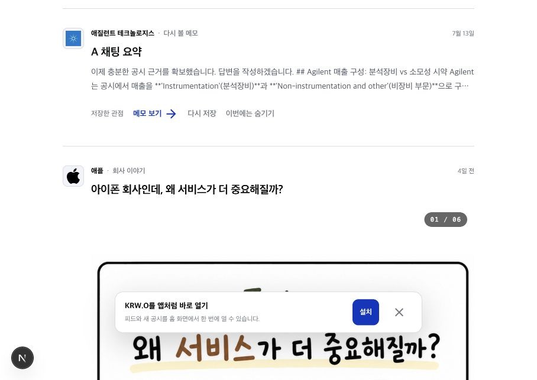

Pulse action model
읽기는 카드에서, 행동은 하나만
현재 상태

현재 메모·뉴스 카드는 한 줄에 ‘상세 보기 + 저장 + 숨기기’가 나란히 있고, 공시는 ‘공시 보기 + 질문 + 다시 보기’를 보여줍니다. 카드의 다음 행동이 많아질수록 읽기와 선택이 같은 줄에서 경쟁합니다.
1. 카드 표면은 ‘상세 읽기’ 하나의 넓은 링크
아이콘과 회사명만 회사 소개로 분리하고, 제목·요약·여백을 포함한 나머지 카드 표면은 상세 화면으로 연결합니다. 사용자는 기사를 읽듯 카드를 눌러 맥락을 보고, 리서치는 별도의 명확한 행동으로 인식합니다.
┌──────────────────────────────────┐ │ [로고] 애플 │ ← 회사 소개 │ 서비스가 더 중요해질까? │ │ 공시·뉴스 요약… │ ← 카드 표면: 상세 보기 │ │ │ [이 이슈로 리서치 →] │ ← 유일한 강조 액션 └──────────────────────────────────┘
구현 제약: 카드 전체를 <Link>로 감싸면 내부의 회사 링크와 채팅 버튼이 중첩됩니다. 상세 링크를 카드의 절대 배경 클릭 영역으로 두고, 회사 링크와 리서치 버튼만 그 위 레이어에 올리는 방식이 안전합니다.
2. 저장·숨기기는 상세 화면으로 이동
피드에서는 저장·숨기기를 기본 노출하지 않습니다. 상세 화면의 상단 더보기 메뉴 또는 하단 액션으로 옮기면, 목록은 ‘무엇을 읽을지’에 집중하고 저장·정리 행동은 문맥을 본 뒤 결정할 수 있습니다. 모바일에서도 버튼이 줄바꿈되거나 오탭될 위험이 줄어듭니다.
특히 ‘다시 볼 메모’에서 다시 저장은 의미가 즉시 명확하지 않으므로, 상세 안에서는 상태에 맞춰 ‘저장 해제’ 또는 ‘이번에는 숨기기’처럼 정확한 문구로 보여주는 편이 좋습니다.
3. 모든 카드에 같은 CTA를 강제하지 않기
- 공시·뉴스·메모·질문: 상세 클릭 + ‘이 이슈로 리서치’ CTA.
- 진행 중인 분석: 상세와 리서치가 동일한 채팅이므로 ‘대화로 돌아가기’ 하나만 유지.
- 회사 이야기 캐러셀: 슬라이드 자체가 상세 경험이므로 카드 표면을 다시 링크로 만들지 않고, 이미 있는 확대·슬라이드 조작을 유지.
- 오늘의 체크업·내부자 거래 묶음: 개별 상세가 아닌 목록 목적이므로 ‘전체 보기’ 하나를 유지.
접근성 기준
카드 표면은 실제 URL을 가진 링크로 만들고, 아이콘·회사명·CTA를 별도의 형제 인터랙션으로 둬야 합니다. 링크나 버튼을 서로 중첩하지 않고, 모바일의 CTA는 최소 44×44px 터치 영역을 유지합니다. 이는 네이티브 링크·버튼을 쓰고 가까운 인터랙션을 분리하라는 MDN의 HTML 접근성 가이드와 버튼 접근성 가이드에 부합합니다.
유지할 점
- 회사 아이콘과 한글 회사명을 회사 소개 진입점으로 유지하는 구조
- 뉴스·공시·메모별로 다른 요약 밀도와 출처 맥락
- 진행 중 리서치를 피드 상단에서 독립적으로 보여주는 패턴